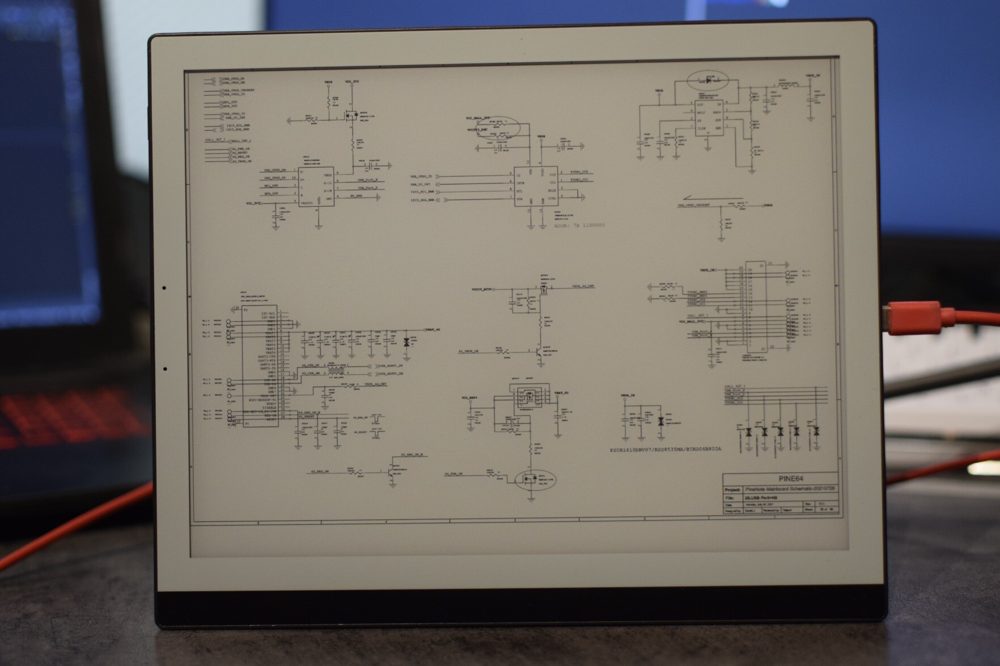

PINE64 PineNote (pine64-pinenote)
|
 The PineNote showing a pdf | |
| Manufacturer | PINE64 |
|---|---|
| Name | PineNote |
| Codename | pine64-pinenote |
| Released | 2021 |
| Category | testing |
| Original software | Unknown |
| Hardware | |
| Chipset | Rockchip RK3566 |
| CPU | 4x 2Ghz Cortex-A55 |
| GPU | Mali G52 2EE |
| Display | 1404x1872 e-paper |
| Storage | 128 GB |
| Memory | 4GB |
| Architecture | aarch64 |
{kind=link}
| USB Networking |
Broken
|
|---|---|
| Flashing |
Works
|
| Touchscreen |
Works
|
| Display |
Partial
|
| WiFi |
Works
|
| FDE | |
| Mainline |
Works
|
| Battery |
Works
|
| 3D Acceleration |
Broken
|
| Audio |
Works
|
| Bluetooth |
Works
|
| Camera |
Unavailable
|
| GPS |
Unavailable
|
| Mobile data |
Unavailable
|
| SMS |
Unavailable
|
| Calls |
Unavailable
|
| USB OTG |
Broken
|
| NFC |
Unavailable
|
| Accelerometer |
Broken
|
|---|---|
| Magnetometer | |
| Ambient Light | |
| Proximity | |
| Hall Effect | |
| Barometer | |
| Power Sensor | |
| Camera Flash | |
|---|---|
| Keyboard | |
| Touchpad | |
| USB-A | |
| HDMI/DP | |
| Ir TX | |
| Ir RX | |
| Stylus | |
| Haptics | |
| Ethernet | |
| FOSS bootloader | |
The PineNote is a 10.3" e-ink tablet produced by Pine64 for the Linux mobile community.
Installation
| This will erase your userdata and make android unbootable, take backups of all affected partitions via ADB (rkdeveloptool read-partition only allows reading partitions < 32mb) |
Currently, installing postmarketOS requires UART access to manually boot the mainline kernel. If you have a developer unit, removing the back cover will reveal the pre-soldered UART wires, if you have a production unit you will have to solder these yourself. This will be resolved as soon as we have a u-boot build which can auto-boot from extlinux.
Install rkdeveloptool from https://gitlab.com/pine64-org/quartz-bsp/rkdeveloptool, put the end of the pen near the top right of the back of the device to trigger rockusb mode.
We need to wipe the boot and recovery partitions to make sure u-boot doesn't try and boot Android
fallocate -l 32M blank.bin rkdeveloptool write-partition boot blank.bin rkdeveloptool write-partition recovery blank.bin
Now build an image with pmbootstrap, I would recommend Phosh or sway.
pmbootstrap init # pine64 pinenote pmbootstrap install
And flash (pmbootstrap supports rkdeveloptool as of pmbootstrap!2165).
pmbootstrap flasher flash_rootfs # flashes to userdata pmbootstrap flasher flash_kernel # flashes to cache
Run pmbootstrap shutdown to exit out of pmbootstrap. If your PineNote shipped with a UART dongle, use it to connect the PineNote with your PC. Note that the LED needs to be oriented so that it points to the PineNote's screen. At this stage you no longer need to be in rockusb mode, so you don't need to worry about pen/magnet placement. Ensure that your PineNote is charged before beginning the next step.
$ picocom /dev/ttyUSB0 -b 1500000 -l
Reboot the PineNote by holding down the power button. You should see a long stream of text appear in picocom indicating that you are in the u-boot shell. This next command will boot the PineNote into postmarketOS.
=> sysboot ${devtype} ${devnum}:b any ${scriptaddr} extlinux.conf
b is the partition number (decimal 11 encoded in hex) for the cache partition, where we flashed the extlinux boot partition to.
If the file location of extlinux.conf gives you trouble, as indicated by a 'file not found' error, run the following to ascertain where extlinux.conf is on your system (for example, in /extlinux/extlinux.conf). Then run the sysboot command again using the full path of extlinux.conf
=>ls ${devtype} ${devnum}:b #To examine a specific directory, such as /extlinux, place it at the end of this command
You should now see the postmarketOS splash and the pinenote will boot.
Contributors
- MartijnBraam
- Petr Hodina
- Caleb Connolly
Users owning this device
- Aa13q
- Kalube (Notes: Working on E-ink support for Mainline)
- MartijnBraam
How to enter flash mode
The device is only flashable using the rkusb bootloader mode. This can be done with the opensource rkdeveloptool utility.
To trigger the bootloader hold a magnet on the backcover of the pinenote while powering it on.
When it's booted correctly into bootloader mode it should show up in the device list of rkdeveloptool:
$ rkdeveloptool ld
DevNo=1 Vid=0x2207,Pid=0x350a,LocationID=100 Loader
It's possible to overwrite the eMMC with the LBA write command:
$ rkdeveloptool wl 0 rootfs.img
The 0 is the offset in blocks from the start of the eMMC, can be used to flash a partition if you know the offset
Recover from a broken bootloader
If uboot image is overwritten the rockusb mode won't work anymore. The device might boot into maskrom mode in which case it should show up in `rkdeveloptool list` as maskrom. If the uboot image is partially overwritten but still recognized by the maskrom it won't stay in maskrom mode and you'd have to open the back of the device and short TP1301 and TP1302 while powering up. This will make eMMC reads fail so maskrom always runs.
Once the device is in maskrom mode the only thing you can do is push a new loader into ram and start that.
$ rkdeveloptool list
here it lists maskrom now
The .bin file is build by u-boot and might have a slightly different version
$ rkdeveloptool db rk356x_spl_loader_v1.04.108.bin
$ rkdeveloptool ptt
now it's able to read flash and list the partitions
See also
- PINE64 wiki page
- fork of rkdeveloptool with many improvements this will be the version supported on the pinenote.
- pmbootstrap!2165 - support for rkdeveloptool in pmbootstrap for flashing with BSP u-boot
- pmaports!2910, pmaports!3778 - MR for initial device support